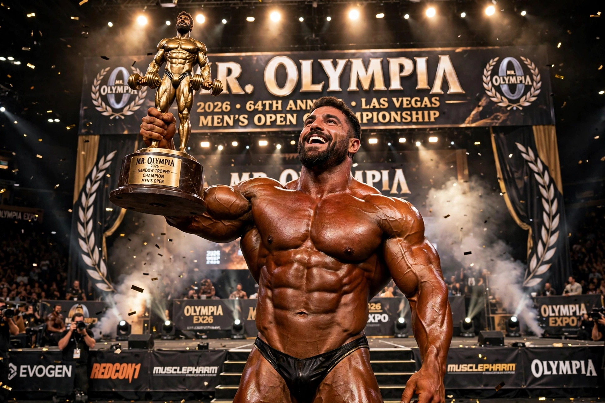

Mr. Olympia is the title awarded to the winner of the professional men's bodybuilding contest at Olympia Fitness & Performance Weekend, the most prestigious competition in bodybuilding. It was created by Joe Weider in 1965 and is sanctioned by the IFBB Pro League.

| Mr. Olympia | |
|---|---|
| First held | 1965, New York City |
| Founder | Joe Weider |
| Most titles | 8 — Lee Haney, Ronnie Coleman |
| First winner | Larry Scott |
Larry Scott won the first two contests (1965–66). Arnold Schwarzenegger won seven times (1970–75, 1980) and popularized the sport. Lee Haney won eight consecutive titles (1984–91), matched by Ronnie Coleman (1998–2005). Other multiple winners include Dorian Yates (6), Phil Heath (7), Jay Cutler and Sam Sulek-era champions in newer eras.
Competitors qualify by winning pro shows or on points. Judging is based on muscularity, size, symmetry, proportion, and conditioning in mandatory poses and individual routines. The weekend now includes divisions such as 212, Classic Physique, Men's Physique, Ms. Olympia, and others.